Model Selection
What is model selection?
AI models can answer questions, summarise text, classify messages, understand images and generate content. But they differ in capabilities, output quality, speed and cost, so choosing one is an important part of building an AI application.
Model selection is the process of choosing the AI model that best fits the requirements of a particular task or application. The right choice depends on what the application must do, the quality it needs, and practical limits such as cost, speed and privacy.
Running example: an online store
An online store wants to classify customer messages into three categories: Billing, Delivery and Returns. We will use this example through the whole note.
I paid for my order, but the payment was deducted twice.BillingThe team needs a model that classifies messages correctly, returns one of the permitted categories, and also meets the store’s response-time and budget requirements.
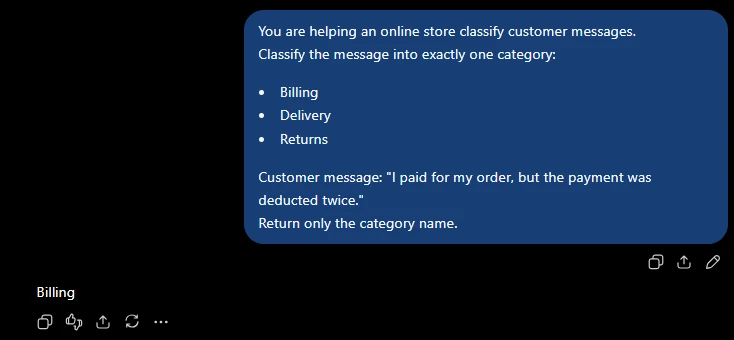
Billing.Why model selection matters
The model affects both how well an AI application works and how practical it is to operate.
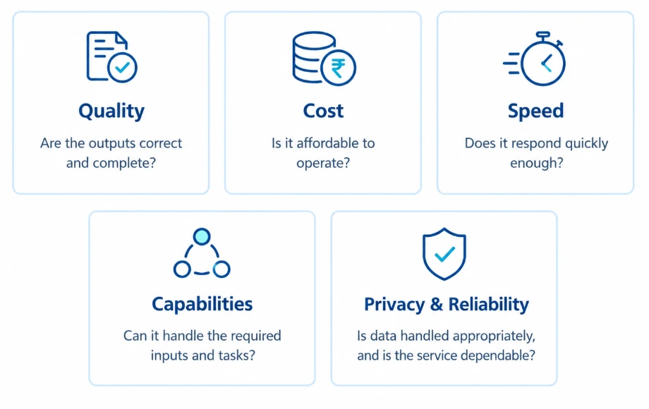
Model selection vs model evaluation
These two words are often mixed up. They are two different steps:
Model evaluation
Testing an AI model to see how well it performs a task. It produces evidence: scores, error lists, timings.
Model selection
Choosing the model that best meets the application’s requirements, using test results plus practical limits such as cost and response time.
Example. The store wants an AI model to classify customer messages as Billing, Delivery or Returns. It tests two models using the same 100 messages:
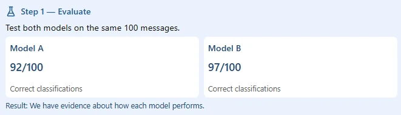
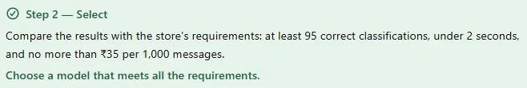
Step 1 is evaluation. Step 2, checking those results together with speed and cost and choosing a model that meets every requirement, is selection.
Understanding model requirements
Before comparing models, define what the application needs to accomplish. Clear requirements make it easy to shortlist candidates and decide what to test.
Define the problem and the expected output
Describe the problem the application must solve, then define what the model should return.
A vague requirement such as “help customer support” is difficult to test. A clearer requirement is “classify each customer message as Billing, Delivery, or Returns and return exactly one category.”
![Vague vs clear requirements. 'Help with customer messages' becomes 'Classify each message as Billing, Delivery, or Returns' (specifies the task, categories and exact output format). 'Summarize documents' becomes 'Summarize the main points in no more than five bullet points' (sets a clear limit and output format). 'Answer questions' becomes 'Use the supplied information and state when the answer is unavailable' (provides context and a fallback rule). Clear requirements reduce ambiguity and make evaluation more consistent.](img/05.webp)
Identify the type of AI task
Different tasks need different kinds of output:
| Task type | What the model does | Example |
|---|---|---|
| Classification | Assigns an input to a category | Label a message as Billing, Delivery or Returns |
| Summarisation | Shortens information while keeping the key points | Summarise a customer complaint |
| Question answering | Responds to a question | Explain the store’s return policy using approved information |
| Content generation | Creates new content | Draft a polite reply to a customer |
An application may combine tasks: first classify a message, then draft a reply. Each step should have its own expected behaviour and evaluation criteria, and each step may even use a different model.
Identify the required capabilities
Decide what kinds of information the model must accept and what it must produce.
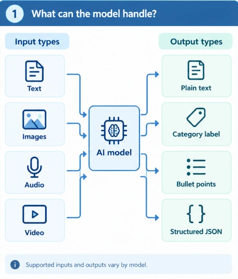
Example of a structured output:
{
"category": "Billing"
}Quality targets and practical constraints
Define quality and performance requirements
Requirements should say what acceptable performance means, in numbers you can check:
- At least 95% accuracy on a defined classification test set.
- Exactly one permitted category per message.
- Average response time below two seconds under specified test conditions.
- No unsupported claims in a customer-facing answer.
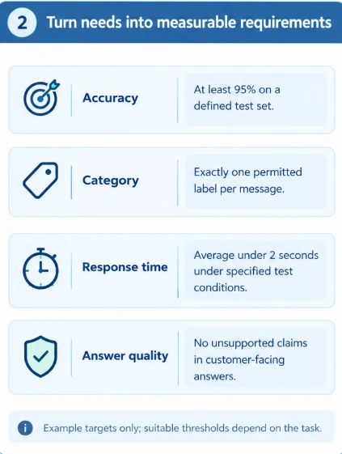
Identify technical and budget constraints
A model must also be practical to integrate and operate.
Budget
Expected usage costs and available spending.
Privacy
Whether the model’s data-handling terms meet organisational requirements.
Infrastructure
Can the team run the model on its own hardware, or does it need a hosted service?
Integration
Can the application reach the model and get the required output format?
Availability
Can the service meet the application’s operational needs (uptime, limits)?
Licensing
Do the model’s terms permit the intended (for example, commercial) use?
Putting the requirements together
For the store’s message classifier, a requirements summary might look like this:
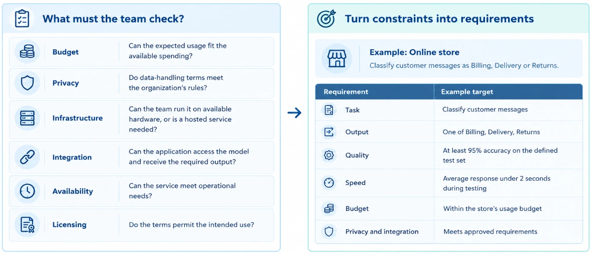
The table in the screenshot, as text:
| Requirement | Example target |
|---|---|
| Task | Classify customer messages |
| Output | One of Billing, Delivery, Returns |
| Quality | At least 95% accuracy on the defined test set |
| Speed | Average response under 2 seconds during testing |
| Budget | Within the store’s usage budget |
| Privacy and integration | Meets approved requirements |
Key factors: output quality and cost
With requirements defined, the team compares the factors that decide whether a model is suitable. No single factor decides every case; how much each matters depends on the task.
Model capabilities and output quality
Check whether each candidate produces correct results for your task. For example, a message about a damaged item and a refund should be classified according to the store’s own rules, not whatever sounds reasonable.
Cost and budget
Using a model costs money. The cost depends on how many requests you send, how much text the model reads and writes, and whether you also pay for hosting. A model that seems cheap for a few requests can become costly when thousands of people use the app.
Suppose a service costs ₹0.03 per request:
Estimated usage cost = number of requests × estimated cost per request
For 10,000 requests: 10,000 × ₹0.03 = ₹300Key factors: latency and context window
Latency and response time
Latency is how long a user waits after sending a request to an AI application. In a store’s live chat, a quick reply makes the conversation feel smooth. A report generated in the background can take longer, because nobody is watching it happen.
Time to first response
How long until the first part of the answer appears. Matters most for chat, where the answer can stream in.
Total response time
How long until the complete answer is ready. Matters when your code needs the whole result, like a category.
Response time changes with the length of the input, the length of the answer, network conditions and how busy the service is.
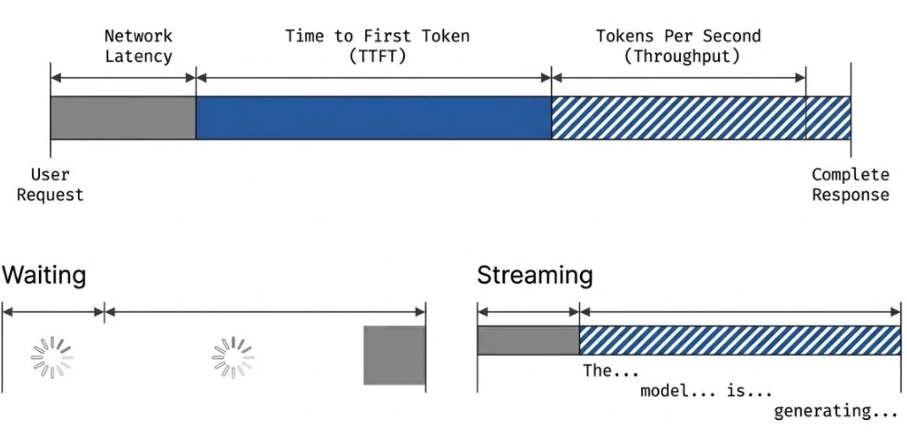
Context window and input capacity
A model’s context window is how much information (in tokens) it can process in a single interaction: instructions, conversation history, your input and its own output all share it.
When selecting a model, check whether its context window can hold the application’s inputs, conversation history and required output. A larger context window does not automatically mean more accurate answers: models can still miss details buried in very long inputs, and longer inputs cost more and take longer.
Key factors: privacy, reliability, integration and deployment
Privacy and data handling
AI applications may process customer details or other sensitive information. Before choosing a model, check how the provider handles that data.
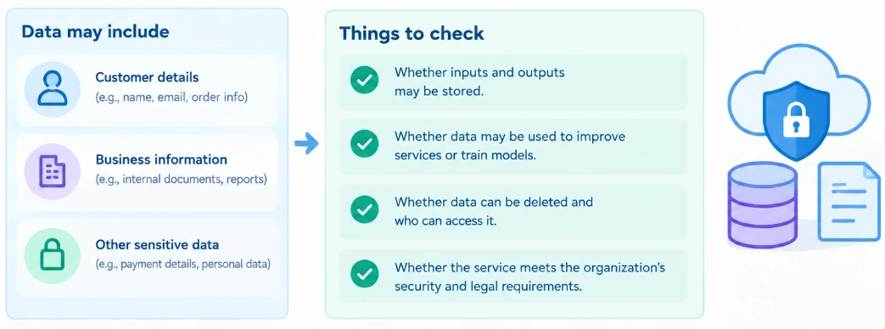
Availability and reliability
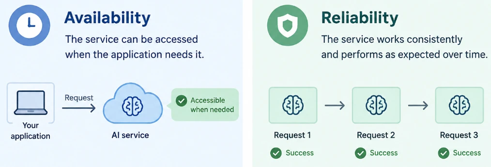
For example, a customer-support application may use a model that gives good answers but becomes unavailable during busy periods. This can interrupt customer service.
Integration and tool support
A model may need to work with other software or use tools. If a customer asks “Where is my order?”, the application may connect the assistant to the order-management system to retrieve the order status.
![Five steps: 1 User request – the customer asks 'Where is my order?'. 2 AI model – understands the request and decides to use a tool. 3 Tool / integration – the application provides the right tool (order management system). 4 External system – the tool securely retrieves the order status. 5 Response – the model uses the information to answer 'Your order is on the way.' Note: the model does not automatically have access to your store's data; the application must provide the connection and control who can access it.](img/12.webp)
So check whether the model supports the tool use and structured output your application needs.
Deployment requirements
Deployment means making a model available for an application to use. Two common options:
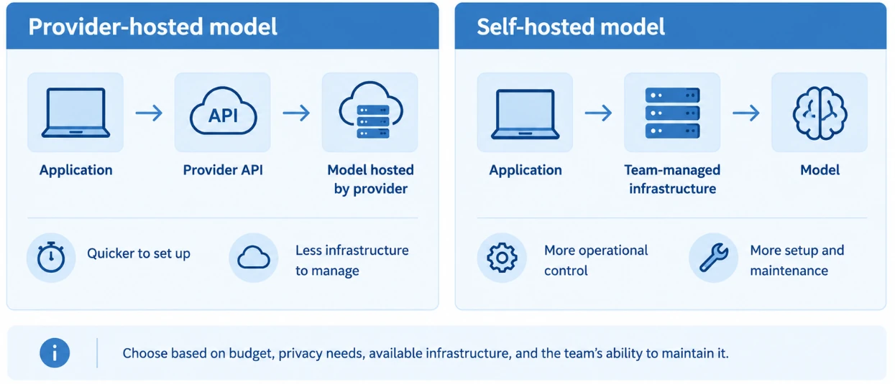
Comparing the factors
| Factor | Question to ask |
|---|---|
| Capabilities and quality | Can it perform the task to the required standard? |
| Cost | Can the application afford the expected usage? |
| Latency | Is the response fast enough? |
| Context window | Can it process the required amount of information? |
| Privacy | Does its data handling meet the application’s requirements? |
| Availability and reliability | Can the service operate dependably enough? |
| Integration and tools | Can it connect to the required application functions safely? |
| Deployment | Can the team operate it in an acceptable way? |
Shortlisting candidates and preparing test cases
After defining requirements and factors, the next step is to test suitable candidates and compare their performance.
Identify candidate models
A candidate model is a model being considered for the application. The goal is not to test every model available, but to shortlist the few that could meet the requirements. The store’s requirements: return one permitted category, meet the quality target, respond in time, fit the budget. It considers three hypothetical candidates:
| Candidate | Initial reason for considering it |
|---|---|
| Model A | Lower expected usage cost |
| Model B | Potentially stronger task performance |
| Model C | Alternative speed and cost characteristics |
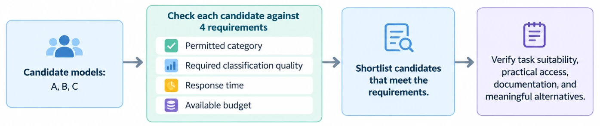
Prepare representative test cases
A test case is an input plus the expected result. A good test set represents the kinds of messages the app will really receive.
| Input message | Expected category |
|---|---|
| “I was charged twice for the same order.” | Billing |
| “My package has not arrived yet.” | Delivery |
| “I want to return the shoes I purchased.” | Returns |
| “The item arrived damaged, and I need a refund.” | Depends on the store’s defined rule |
The last message mentions more than one issue (delivery damage and a refund), so the store must decide a rule before testing, for example “damaged-item refunds go to Returns”. Otherwise you cannot say whether a model was right.
Evaluation criteria, metrics and output quality
An evaluation criterion is a requirement used to judge whether an output is acceptable. A metric is a measurement that puts a number on performance.
![Evaluation criteria define what acceptable output looks like. Examples: correctness (is the answer or category correct?), instruction following (does the model follow the specified rules?), output format (does it return the required structure?), completeness (does it include the required information?), consistency (does it behave acceptably across relevant inputs or repeated runs?). Metrics measure performance using numbers. Example: Accuracy (for classification) = (Correct predictions ÷ Total predictions) × 100%. Example calculation: 90 correct predictions, 100 total predictions, 90% accuracy.](img/15.webp)
Accuracy = (Correct predictions ÷ Total predictions) × 100%
90 correct ÷ 100 total × 100% = 90% accuracyEvaluate output quality and task performance
Run each candidate on the prepared test cases and compare its outputs with the expected results (or a scoring rubric for open-ended tasks). Suppose two hypothetical candidates are tested on the same 100 customer messages:
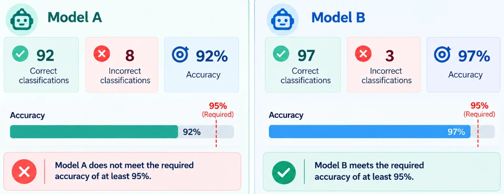
If the required accuracy is at least 95%, Model A does not meet the target and Model B does. Also check the incorrect answers to identify repeated mistakes, such as misclassifying Returns messages.
Cost, response time, consistency and edge cases
Measure cost and response time
A model may produce accurate results but still be unsuitable if it is too expensive or too slow. Estimate cost from expected usage, input and output sizes, and the provider’s current pricing. Measure response time by testing all models under similar conditions.
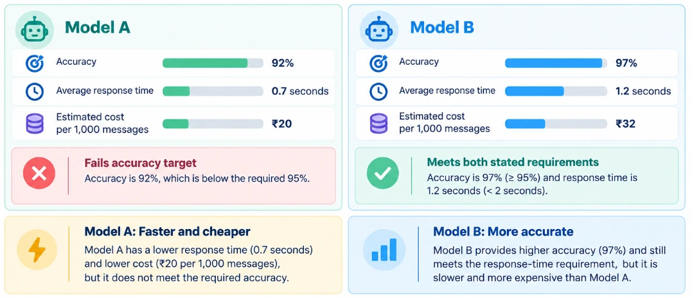
Test consistency and edge cases
Consistency means the model gives dependable results: the same message should get the same category every time. An edge case is an unusual or difficult input that may cause mistakes. For the store’s classifier, useful tests include:
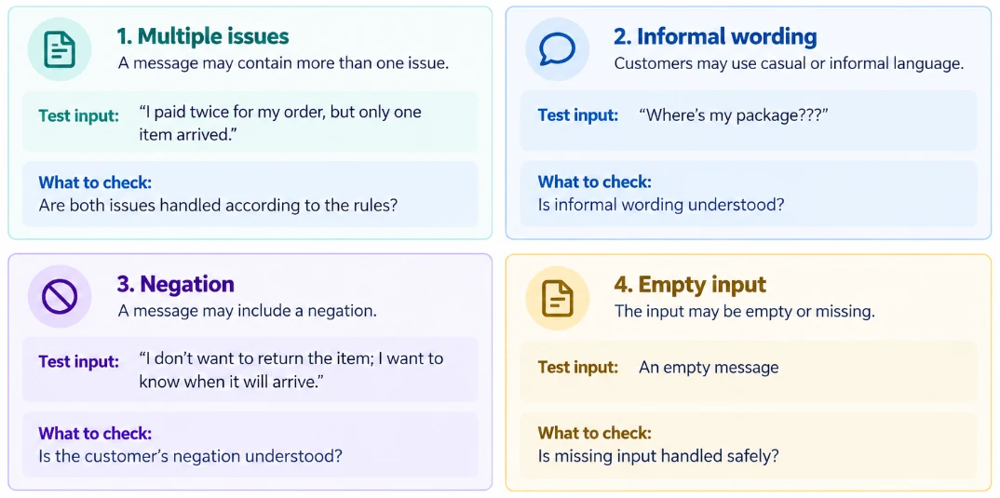
| Edge case | Test input | What to check |
|---|---|---|
| 1. Multiple issues | “I paid twice for my order, but only one item arrived.” | Are both issues handled according to the rules? |
| 2. Informal wording | “Where’s my package???” | Is informal wording understood? |
| 3. Negation | “I don’t want to return the item; I want to know when it will arrive.” | Is the customer’s negation understood? |
| 4. Empty input | An empty message | Is missing input handled safely? |
Trade-offs, benchmarks and leaderboards
A trade-off happens when a model is better in one area but worse in another: more accurate, but slower or more expensive. Suppose the team gets these illustrative results:
| Measure | Model A | Model B | Model C |
|---|---|---|---|
| Accuracy | 92% | 97% | 98% |
| Average response time | 0.7 s | 1.2 s | 2.4 s |
| Estimated cost per 1,000 messages | ₹20 | ₹32 | ₹45 |
The application requires at least 95% accuracy, an average response time below two seconds, and the lowest cost among models meeting both.
So Model B is the suitable choice for these requirements. Notice that Model C is the most accurate, and it still loses. B is not “the best model”; it is the best fit for this application.
The limits of benchmarks and leaderboards
A benchmark is a defined set of tasks or tests used to measure and compare performance. A leaderboard displays results or rankings based on one or more evaluations. They help you shortlist, but the highest-ranked model may not be the best fit for your application.
Not your inputs
Benchmarks may not reflect your real users’ messages, language mix or rules.
Results vary
Scores change with test data, prompts and model versions.
Missing factors
Rankings rarely reflect cost, speed, privacy or integration needs.
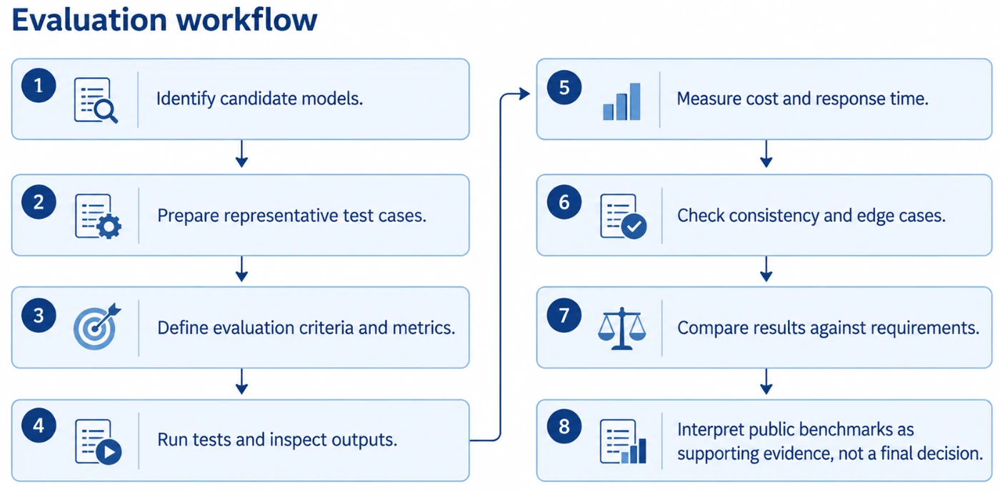
Smaller vs more capable models
Evaluation results give you evidence; now use it to choose. Choose a model that meets the requirements for quality, speed and cost. The most capable model is not always necessary.
A smaller model may be faster and cheaper. A more capable model may handle hard tasks better but cost more or respond more slowly. Always test before deciding.
Example: online store.
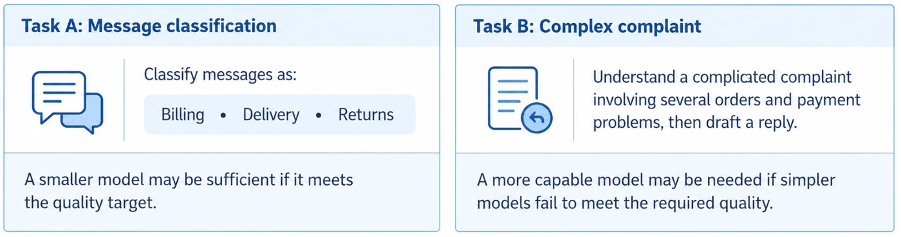
| Factor | A smaller model may fit when… | A more capable model may fit when… |
|---|---|---|
| Task complexity | The task is straightforward and clearly defined | The task involves complex instructions or reasoning |
| Output quality | It meets the required quality target | Simpler candidates fail the target |
| Response time | It provides acceptable quality at the required speed | Additional processing time is acceptable |
| Cost | Lower operating cost is important | Quality improvements justify extra cost |
Hosted models vs open-weight models
A hosted model is made available through a service managed by a provider. The application commonly sends requests through an API while the provider operates the model infrastructure.
An open-weight model makes its trained model weights (the learned numbers that make up the model) available under applicable access and licensing terms. An organisation may be able to run it on its own infrastructure or through a hosting service.
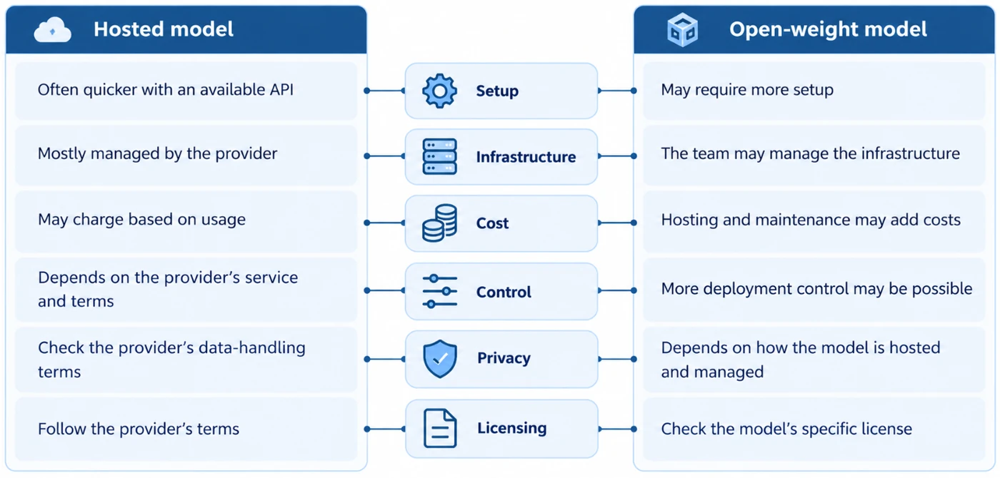
The comparison in the screenshot, as text:
| Hosted model | Open-weight model | |
|---|---|---|
| Setup | Often quicker with an available API | May require more setup |
| Infrastructure | Mostly managed by the provider | The team may manage the infrastructure |
| Cost | May charge based on usage | Hosting and maintenance may add costs |
| Control | Depends on the provider’s service and terms | More deployment control may be possible |
| Privacy | Check the provider’s data-handling terms | Depends on how the model is hosted and managed |
| Licensing | Follow the provider’s terms | Check the model’s specific license |
Example: a college helpdesk
A college wants an AI assistant that answers questions about courses and campus services.
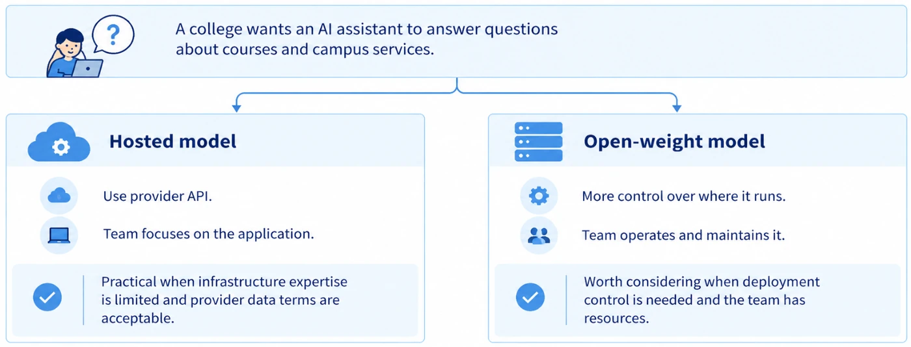
Matching models to requirements and deciding with evidence
Select a model based on what the application must do, not simply because it is popular or has many capabilities.
| Application | Important requirements | What to look for |
|---|---|---|
| Customer message classification | Correct category, valid output, low cost, quick responses | Reliable classification and correct output format |
| Document summarisation | Accurate main points, completeness, sufficient input capacity | Summaries that preserve important information |
| Technical question answering | Correct explanations, instruction following, handling uncertainty | Reliable answers and appropriate acknowledgement of missing information |
Practical matching process
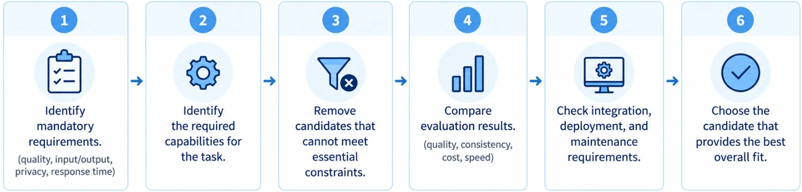
A candidate that fails a critical requirement may be unsuitable even if it performs well in another area.
Making an evidence-based decision
An evidence-based selection decision uses defined requirements and evaluation results, rather than assumptions, popularity or personal preference. Suppose an online store has these requirements:
- At least 95% accuracy on the defined test set.
- Average response time below two seconds under the specified conditions.
- Cost no higher than ₹35 per 1,000 messages.
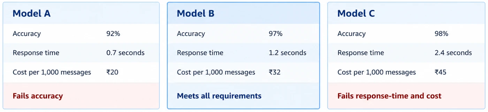
Practical exercise: choosing a model end to end
This exercise brings the earlier concepts together. The online store wants to classify customer messages into Billing, Delivery or Returns. The team will define requirements, shortlist candidates, test them fairly, compare results and recommend a model.
Step 1 · Define the scenario and its requirements
The store needs to assign each customer message to the correct category. Before testing, the team defines measurable requirements:
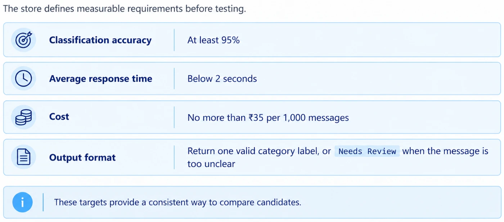
Needs Review when the message is too unclear.Step 2 · Shortlist candidates
The team identifies three fictional candidates that can perform the classification task:
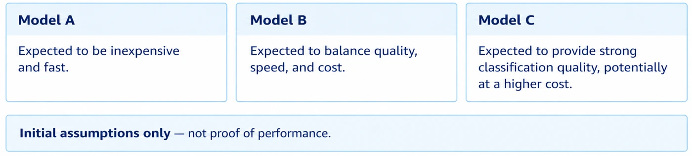
Step 3 · Test every candidate on the same inputs
The team prepares ten test cases. The expected outputs are defined before the models are tested.
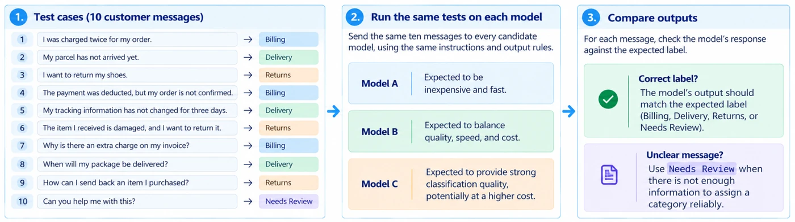
The ten test cases from the screenshot:
| # | Customer message | Expected label |
|---|---|---|
| 1 | I was charged twice for my order. | Billing |
| 2 | My parcel has not arrived yet. | Delivery |
| 3 | I want to return my shoes. | Returns |
| 4 | The payment was deducted, but my order is not confirmed. | Billing |
| 5 | My tracking information has not changed for three days. | Delivery |
| 6 | The item I received is damaged, and I want to return it. | Returns |
| 7 | Why is there an extra charge on my invoice? | Billing |
| 8 | When will my package be delivered? | Delivery |
| 9 | How can I send back an item I purchased? | Returns |
| 10 | Can you help me with this? | Needs Review |
Step 4 · Record quality, cost and response time
The following results are illustrative. The sample outputs show how classification accuracy is calculated; the response-time and cost figures are assumed measurements for this exercise.
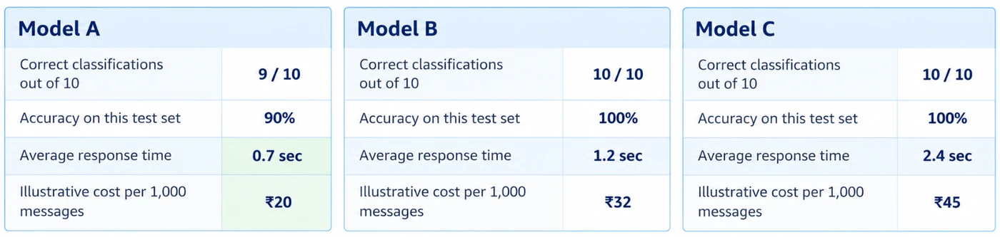
For a real cost estimate, use the applicable current pricing and expected input/output usage. Measure response time under comparable conditions.
Step 5 · Compare with a decision matrix
The team compares the results with its requirements.
| Requirement | Target | Model A | Model B | Model C |
|---|---|---|---|---|
| Accuracy | At least 95% | Fails in sample | Meets in sample | Meets in sample |
| Average response time | Below 2 seconds | Meets | Meets | Fails |
| Cost | At most ₹35 per 1,000 | Meets | Meets | Fails |
| Meets all requirements? | All must pass | No | Yes | No |
Model A is fast and inexpensive but falls below the accuracy target. Model C matches Model B’s accuracy on this small sample but exceeds both the response-time and cost limits. Model B meets all three requirements in the illustrative results.
When several models pass: a weighted decision matrix
If several candidates meet all mandatory requirements, a team can compare optional advantages using a weighted decision matrix.
Step 6 · Recommend and justify
Before launch, the team should:
- test a larger, more representative set of customer messages,
- examine difficult cases,
- check consistency across repeated runs where appropriate,
- verify actual costs,
- and confirm privacy and integration requirements.
The decision can change if priorities change. A stricter response-time target could make Model B unsuitable, while a bigger budget could make Model C worth investigating.
Key terms
- Model selection
- Choosing the AI model that best fits a task’s requirements, using evaluation results together with practical limits such as cost, speed and privacy.
- Model evaluation
- Testing an AI model on defined inputs to measure how well it performs a task.
- Candidate model
- A model shortlisted for consideration because it could plausibly meet the application’s requirements.
- Test case
- An input together with its expected result, defined before the models are run.
- Evaluation criterion
- A requirement used to judge whether a model’s output is acceptable, such as “exactly one permitted category”.
- Metric
- A measurement that quantifies performance, such as accuracy, average response time or cost per 1,000 requests.
- Accuracy
- The percentage of test cases a model gets right: correct answers ÷ total × 100.
- Latency
- How long a user waits after sending a request; measured as time to first response and total response time.
- Context window
- The maximum amount of information, in tokens, a model can handle in one interaction, including instructions, history, input and output.
- Edge case
- An unusual or difficult input, such as a message with two issues or heavy typos, that may cause a model to make mistakes.
- Trade-off
- When a model is better in one area but worse in another, for example more accurate but slower or more expensive.
- Benchmark
- A defined set of tasks or tests used to measure and compare model performance; useful for shortlisting but not a substitute for testing on your own data.
- Hosted model
- A model run by a provider and accessed by the application through an API.
- Open-weight model
- A model whose trained weights are released under licence terms, so an organisation can run it on its own infrastructure or through a hosting service.
- Weighted decision matrix
- A comparison table where each factor is scored, multiplied by an agreed weight and summed, used to choose among candidates that all pass the must-have requirements.
Self-check
Pick an answer. You’ll see right away whether it’s correct and why.
What is the difference between model evaluation and model selection?
- They are the same thing
- Evaluation tests performance; selection chooses a model using those results plus practical limits
- Selection happens before any testing
- Evaluation only looks at cost
Evaluation produces evidence; selection uses that evidence together with cost, speed, privacy and other constraints.
Which requirement is the most testable?
- “Help customer support.”
- “Be smart about messages.”
- “Return exactly one of Billing, Delivery or Returns, with at least 95% accuracy.”
- “Use the best model available.”
It names the exact output and a measurable target, so you can check any model against it.
A service costs ₹0.03 per request. What do 10,000 requests cost?
- ₹3
- ₹30
- ₹3,000
- ₹300
10,000 × ₹0.03 = ₹300.
Models A (92%, 0.7 s, ₹20), B (97%, 1.2 s, ₹32) and C (98%, 2.4 s, ₹45). You need ≥ 95% accuracy, < 2 s, then lowest cost. Which do you pick?
- Model B
- Model C, because it is most accurate
- Model A, because it is cheapest
- None of them
A fails accuracy and C fails response time. B is the only one meeting both, so it wins regardless of C’s higher accuracy.
Why shouldn’t you simply pick the model at the top of a public leaderboard?
- Leaderboards are always wrong
- Benchmarks may not match your inputs and ignore cost, speed, privacy and integration
- Top models are never available by API
- Leaderboards only rank open-weight models
Benchmarks are a starting point for a shortlist; your own representative tests decide.
A hospital’s policy says patient notes must never leave its network. Which option fits best?
- Any hosted API, since APIs are always safe
- The model with the largest context window
- An open-weight model self-hosted inside the hospital’s network, if the team can operate it
- The cheapest hosted model
Self-hosting open weights can keep data in-house. Note that neither option is automatically safe; the whole setup matters.
What does a larger context window guarantee?
- More accurate answers
- Faster responses
- Lower cost
- Only that the model can take in more tokens in one interaction
More capacity is not more accuracy, and longer inputs usually cost more and take longer.
When should the expected answer for “The item arrived damaged, and I need a refund” be decided?
- Before testing, as a written store rule
- After seeing which model’s answer looks best
- Never; any category is fine
- Only if a model gets it wrong
Defining expected behaviour in advance keeps the evaluation fair and prevents bending the rules toward a favourite.
All of it, in one sentence
Good model selection means writing measurable requirements first, testing a shortlist on the same representative inputs, removing any model that fails a must-pass requirement, and recommending the one that fits quality, speed and cost best, with evidence, not hype.
— Vishwa Mohan